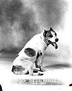
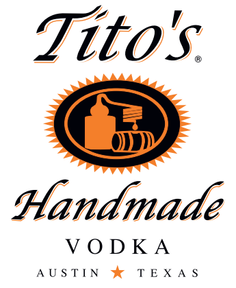
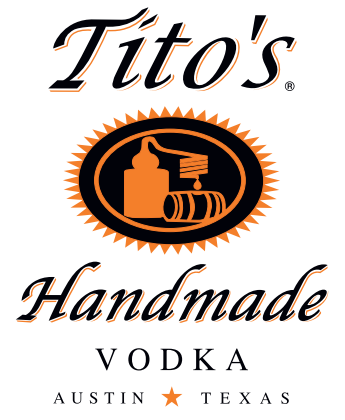

Hook 'em Hounds! As Texas football fans stampede to Pasadena for the BCS title game decked out in burnt orange and proudly waving the “Hook ‘em” hand signal, it’s a good day to remember that while a longhorn steer called Bevo has been a symbol of UT athletics for over eighty years, the University's first mascot was a scrappy tan and white dog named Pig Bellmont. Born in Houston on February 10, 1914, Pig was a seven-week old puppy when he was brought to Austin by L. Theo Bellmont, a co-founder of the Southwest Athletic Conference and UT's first Athletic Director. An adventurous pooch, the dog didn’t want to remain confined to the Bellmont’s backyard, and followed his owner to work on the Forty Acres. The campus was full of attentive students, squirrels to chase, fields of bluebonnets, and plenty of trees. It wasn’t long before Pig was adopted by the University community, and for the next nine years roamed the campus as the 'Varsity Mascot. Each morning, Pig greeted students and faculty on his daily rounds. He frequented classrooms, and on cold days even visited the library (now Battle Hall). Pig regularly attended home and out-of-town athletic events, and it was said he would snarl at the slightest mention of Texas A&M. Pig was named for Gus "Pig" Dittmar, who played center for the football team. Gus, an honors history major, was known to slip through the defensive line "like a greased pig." During a game in 1914, the athlete and the dog stood next to each other on the sidelines. The students noticed, of all things, that both were bowlegged, and from that observation the dog had a namesake. During World War I, Pig looked after the cadets of the School of Military Aeronautics, which was sponsored by the University and housed on what is now called the Little Campus, where only Hargis Hall and the Nowotny Building remain. The school, dubbed the “West point of the Air,” was a precursor to the Air Force Academy, and introduced cadets to the basics of flying through a six-week course. At the conclusion of each course, Pig was always included in the class graduation photo, and twice took the train ride to Dallas, where the cadets were transferred to continue their training. He never missed a hike, and was always present for inspection. On New Year's Day, 1923, Pig Bellmont was accidentally hit by a Model T at the corner of 24th and Guadalupe Streets. He was only injured, but no one realized how seriously until his body was found a few days later. Pig's death was a tragic event on the campus, and the students decided to pay a final, fitting tribute to their beloved canine friend. For about two hours on the afternoon of Friday, January 5th, Pig's body lay in state in front of the University Co-op on Guadalupe Street. More than a thousand doffed their hats and filed by Pig's black casket, which was draped with orange and white ribbon. Promptly at 5pm, a funeral procession was organized. Led by the ‘Varsity Band, the mourners marched south on Guadalupe to 21st Street, then east to the old Law Building, where the Graduate School of Business now stands. Pig's pallbearers were members of a new student group called the Texas Cowboys. Northwest of the Law Building, under a small grove of three live oak trees, Pig's eulogy was delivered by Dr. Thomas Taylor, Dean and the founder of the School of Engineering. "Let no spirit of levity dominate this occasion," the Dean began, "A landmark has passed away." Pig was praised for his loyalty to the University, and compared to the faithful dog of Lord Byron. "I do not know if there is a haven of rest to which good dogs go, but I know Pig will take his place by the side of the great dogs of the earth." On cue, following Taylor's speech, a lone trumpeter played Taps in front of the Old Main Building.
 
